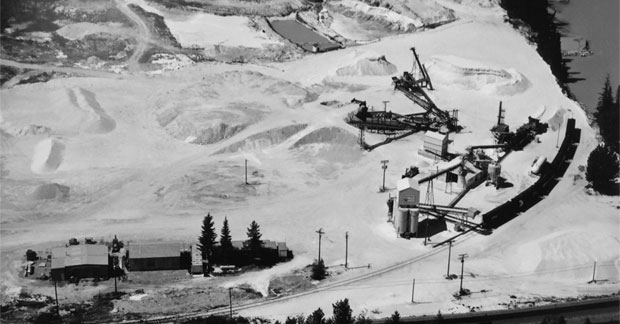

About Northern Silica
Northern Silica is a private limited company incorporated in Alberta, Canada.
Northern Silica is indirectly wholly owned by the Taurus Resources No. 2 Fund (the “T2 Fund”). The T2 Fund is managed by the Taurus Funds Management group, an independent, global fund manager focused on undertaking investments in the mined commodities sector. The Taurus team comprises geologists, mining engineers, mining financiers, metallurgists and portfolio managers with extensive experience in the evaluation and development of mining projects around the world.
Taurus has a strong focus on Environmental, Social and Governance issues with all of its investments. Taurus is a signatory of the Principles for Responsible Investment, an investor initiative in partnership with United Nations Environment Programme Finance Initiative and United Nations Global Compact.
Subject to completion of its acquisition of Heemskirk Consolidated Limited, Northern Silica is committed to ensuring a safe and successful delivery of the Moberly Frac Sand Project and in doing so build a sustainable long-term business in Canada.
Moberly has its own rail siding off the Canadian Pacific East West main line and is located adjacent to the Trans-Canada highway near Golden, BC, providing customers with logistical flexiblity for delivery.
Board of Directors

Martin Boland
Director
Martin is a Director at Taurus Funds Management Pty Limited and is based in Sydney. He holds a Bachelor of Business (Economics & Finance) and a Masters of Mining ...
Prior to joining Taurus in 2014, Martin worked in Investment Banking including with Barclays Capital and ABN Amro Bank.
Mark Connors
President & CEO
Mark is an experienced executive and Member of the Supply Chain Managers Association of Canada with over 20 years of his career in leadership roles including Acting CEO of Heemskirk ...
Consolidated and President Heemskirk Canada Ltd. Mark’s experience has been well rounded by his Oil and Gas service experience where he held roles in Supply Chain and Health Safety and Environment with M-I Swaco throughout North America. Mark is President and CEO of NSC and is located in the Calgary head office.
Stuart Love
Non-Executive Director
Stuart is a Director at Taurus Funds Management Pty Limited and is based in Sydney. He holds a Bachelor of Science (Geology) and Masters of Statistics. Prior to joining Taurus in 2014 ...
, Stuart has worked in a variety of mine operations, finance and technical consulting roles. This has included experience with Newcrest Mining, WMC Resources, Rothschild, Coffey Mining and Sahara Geoservices. Stuart is a Member of the AusIMM.
Reid MacDonald
Non-Executive Director
S. Reid MacDonald is currently the President of The S.R. MacDonald Corporation, a consulting corporation. Over his 40 year career Mr. MacDonald has also served as an ...
and director of numerous corporations, the securities of which have been listed for trading on the Toronto Stock Exchange, the New York Stock Exchange and the Australian Stock Exchange. In these various positions, Mr. MacDonald has had direct experience and responsibility for making decisions regarding executive compensation matters and the suitability of the Corporation’s compensation policies and practices as well as the overall Corporate Governance responsibilities.
Bill Bennett
Non-Executive Director
Bill is a recently retired British Columbia Mines Minister with 16 years’ experience as an MLA and Minister plus two decades of private sector experience in business and law...
He holds a Bachelor of Arts degree (English) and Law degree from Queens University. Bill lives in Cranbrook, B.C.
Management Team
Martin Boland
Director
Martin is a Director at Taurus Funds Management Pty Limited and is based in Sydney. He holds a Bachelor of Business (Economics & Finance) and a Masters of Mining ...
Prior to joining Taurus in 2014, Martin worked in Investment Banking including with Barclays Capital and ABN Amro Bank.
Mark Connors
President & CEO
Mark is an experienced executive and Member of the Supply Chain Managers Association of Canada with over 20 years of his career in leadership roles including Acting CEO of Heemskirk ...
Consolidated and President Heemskirk Canada Ltd. Mark’s experience has been well rounded by his Oil and Gas service experience where he held roles in Supply Chain and Health Safety and Environment with M-I Swaco throughout North America. Mark is President and CEO of NSC and is located in the Calgary head office.
Stuart Love
Non-Executive Director
Stuart is a Director at Taurus Funds Management Pty Limited and is based in Sydney. He holds a Bachelor of Science (Geology) and Masters of Statistics. Prior to joining Taurus in 2014 ...
, Stuart has worked in a variety of mine operations, finance and technical consulting roles. This has included experience with Newcrest Mining, WMC Resources, Rothschild, Coffey Mining and Sahara Geoservices. Stuart is a Member of the AusIMM.
Reid MacDonald
Non-Executive Director
S. Reid MacDonald is currently the President of The S.R. MacDonald Corporation, a consulting corporation. Over his 40 year career Mr. MacDonald has also served as an ...
and director of numerous corporations, the securities of which have been listed for trading on the Toronto Stock Exchange, the New York Stock Exchange and the Australian Stock Exchange. In these various positions, Mr. MacDonald has had direct experience and responsibility for making decisions regarding executive compensation matters and the suitability of the Corporation’s compensation policies and practices as well as the overall Corporate Governance responsibilities.
Bill Bennett
Non-Executive Director
Bill is a recently retired British Columbia Mines Minister with 16 years’ experience as an MLA and Minister plus two decades of private sector experience in business and law...
He holds a Bachelor of Arts degree (English) and Law degree from Queens University. Bill lives in Cranbrook, B.C.
Our History
The silica mining and processing operation was first set up at the current location in 1981 by Mountain Minerals Limited near the town of Golden, British Columbia. Since that time the mining and processing methods have remained relatively unchanged. Tonnages quarried and processed have varied between 80,000 and 300,000tpa.
A rail siding off the Canadian Pacific Railroad main line, which runs between the Trans-Canada Highway and the processing plant, was built in the 1980s. During most of the time of operation, the main customer for the silica sand was Owens Illinois, who had a glass bottle manufacturing plant at Lavington, BC. Due to the high concentration of SiO2 at the Moberly mine the high quality silica made Mountain Minerals a key supplier for the glass manufacturing plant. Other small volume sales were made for golf course sand, decorative stone, traffic paint and the like.
Heemskirk purchased Mountain Minerals Moberly from Dynatec in 2005 including the processing plant site. At the time of purchase of the Canadian business, the Company recognised two critical factors in relation to Moberly. First, the silica mineralisation was both exceptionally pure and large in volume. Second, given the quality, the silica was noted to have enormous strategic importance in the North American, and more particularly Western Canadian, context.
In 2008 the plant was modified by adding a grind ‘circuit to produce silica flour’ (minus 325 mesh silica) used predominantly in high quality thermal cements. Later in 2008, Owens Illinois announced the closure of their bottle making plant at Lavington BC and hence cancelled the contract with Mountain Minerals. Since then, the silica flour plant has continued to operate and the silica sand circuit has operated subject to demand.
Heemskirk began tests in 2010 on existing Run of Mine silica stockpiles to evaluate the Product suitability for use as proppant. A series of tests, mainly involving variations in crushing and grinding treatments on silica feed-stocks resulted in sands of industry standard size gradations of 20/40 mesh, 40/70 mesh and 70/140 mesh size ranges being produced and able to pass the API/ ISO tests for proppants.
In 2014 Heemskirk negotiated a debt funding package for the redevelopment of the Moberly Processing plant and upgrade of mine works. The financing was funded by Taurus Resources Fund T2 fund located in Sydney, Australia. The Moberly redevelopment construction started shortly thereafter and was completed in August 2017. On December 9, 2016 Taurus made an offer to buy the public listed company shares of Heemskirk Consolidated and take the company private along with other large long term investors. They completed the transaction on June 30, 2017. Taurus setup a private incorporated company in Alberta, Canada know as Northern Silica Corporation.
Today Northern Silica Corporation owns and operates the Moberly mine that will again produce high grade silica products for its customers in North America and look as other overseas markets for expansion.